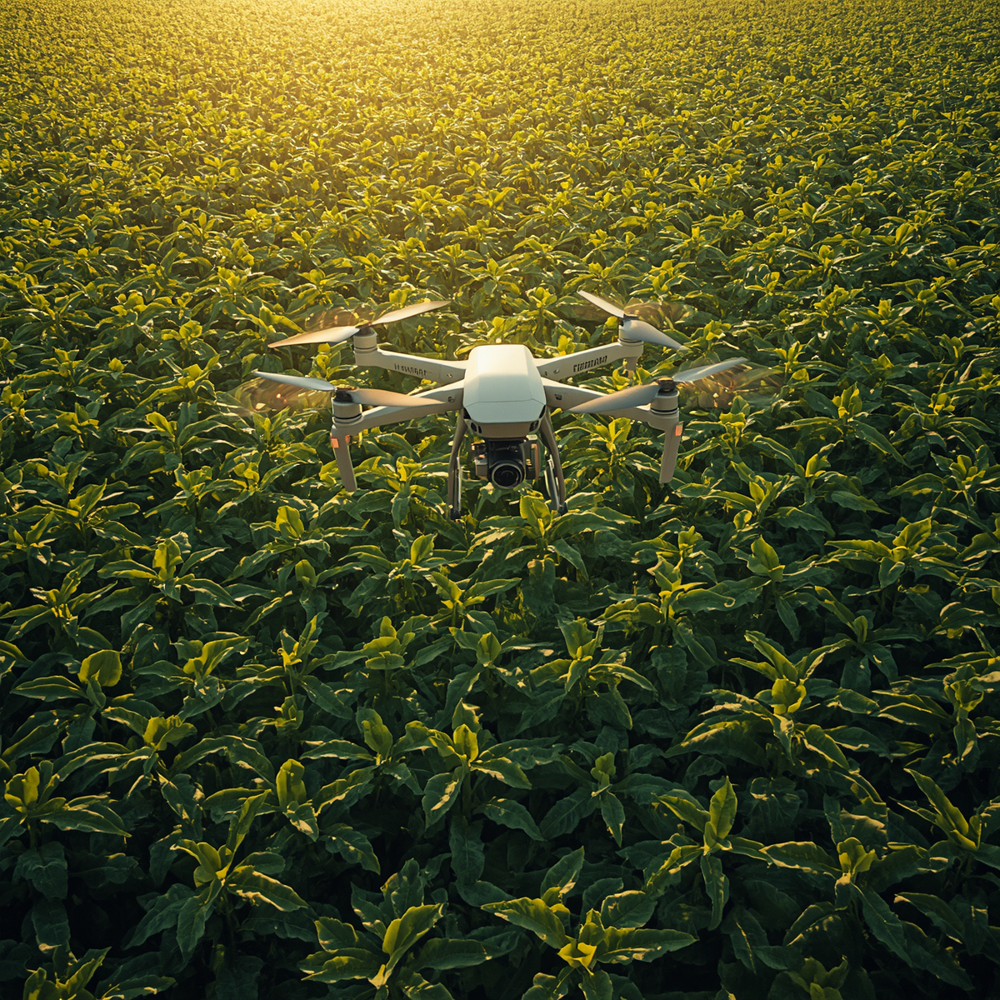

Tecnologia Agrícola Reforça o Papel do Brasil
A agricultura sustentável ganha espaço no debate global em um momento de pressão sobre custos, segurança alimentar, energia e mudanças climáticas. Esse cenário coloca o Brasil em posição de destaque por unir produtividade, inovação e capacidade de adaptação no campo.

O avanço de tecnologias baseadas no uso de microrganismos nas lavouras mostra como o país pode contribuir para reduzir a dependência de fertilizantes químicos. O trabalho da microbiologista brasileira Mariangela Hungria ganhou projeção internacional ao desenvolver bactérias que capturam nitrogênio diretamente do ar, reduzindo custos e dependências geopolíticas. O reconhecimento veio com o World Food Prize, o Nobel da Agricultura.
“Num planeta preocupado com segurança alimentar, inflação e mudanças climáticas, talvez uma das soluções mais sofisticadas do século esteja justamente onde o Brasil sempre foi forte: no campo...”
Deixe sua opinião ou dúvida